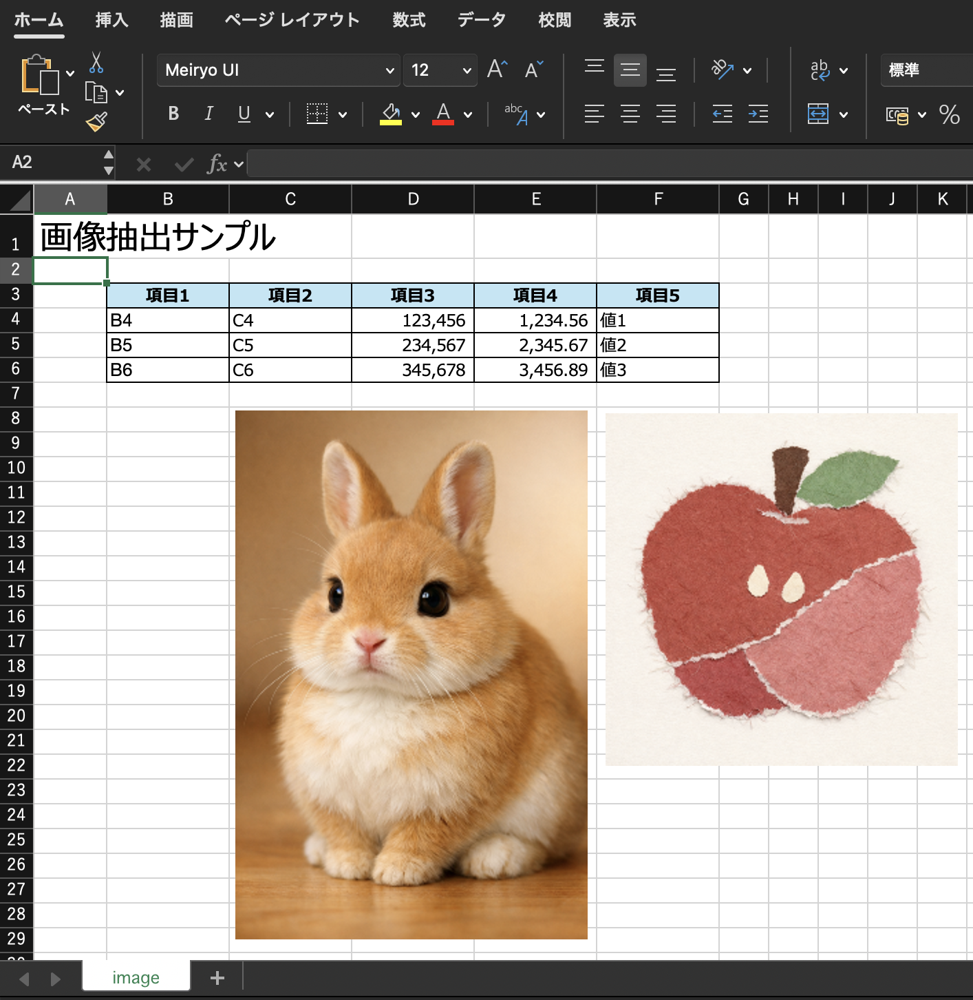
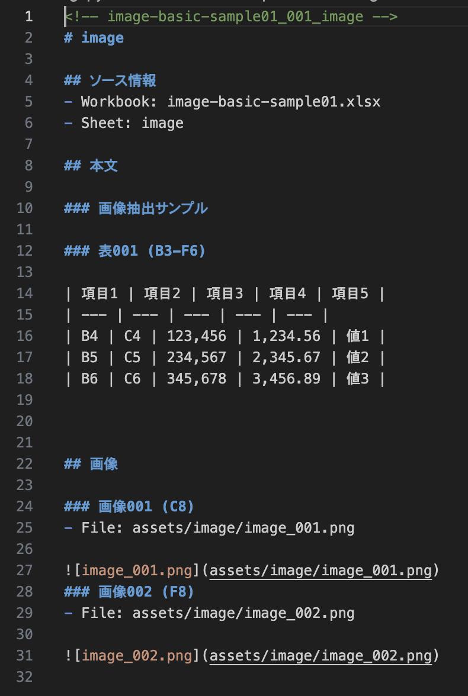
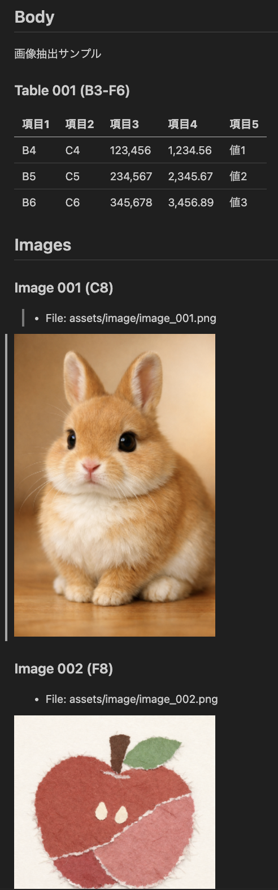

Local Browser Tool
xlsx2md
What is this?
xlsx2md is a single-file web app that reads Excel (.xlsx) files locally and extracts prose, tables, and images as Markdown.
- Runs entirely in the browser with no server communication.
- Converts the whole workbook automatically without sheet-by-sheet manual work.
- Makes workbook content easier to reuse in generative AI workflows.
Features
- Reads
.xlsxfiles directly in the browser and processes them locally. - Converts all sheets in a workbook in one pass.
- Extracts prose, tables, and images.
- Detects tables and converts them into Markdown tables.
- Prefers cached formula values and parses formulas when needed.
- Extracts chart configuration data.
- Extracts shape source data as text and outputs SVG when supported.
- Saves output as Markdown or ZIP.
Use Cases
- Convert Excel workbooks into Markdown for generative AI input.
- Extract prose, tables, and images into a reusable text-based format.
- Process an entire workbook without manual work on each sheet.
- Handle sensitive files locally without uploading them to a server.
- Use the tool in a browser without installing additional applications.
How to use
- Open
xlsx2md.htmlin a web browser. - Select an
.xlsxfile. - After loading, Markdown for all sheets is generated automatically.
- Save the result as Markdown or ZIP.
How it works
- Read
.xlsxfiles in the browser. - Open the file contents and read internal data.
- Analyze sheet, image, and related workbook information.
- Prefer cached formula values and parse formulas when needed.
- Extract prose, tables, and images.
- Detect tables and convert them into Markdown tables.
- Extract chart configuration information only.
- Extract shape source data as text, and output SVG when supported.
- Assemble the workbook into Markdown output.
Example
xlsx2md screen where you load an Excel workbook and review the generated result.日本語: これは
xlsx2md のメイン画面です。ここで Excel ブックを読み込み、生成された結果を確認します。

日本語: 入力となる Excel ブックには、地の文、表、画像などの情報が複数シートにまたがって含まれます。

xlsx2md extracts the content and generates Markdown text automatically.日本語: ブックを読み込むと、
xlsx2md が内容を抽出し、Markdown テキストを自動生成します。

日本語: 生成された Markdown は、文書として読みやすい形でプレビューできます。
What is this?
xlsx2md は、Excel (.xlsx) をローカルで読み込み、地の文・表・画像を Markdown として抽出する Single-file Web App です。
- ブラウザ内でローカルに動作し、サーバ通信を行いません。
- Excel ブック全体を、シートごとの手作業なしで自動変換します。
- 生成AI に渡しやすい Markdown 形式で情報を取り出せます。
Features
.xlsxファイルをブラウザ内で読み込み、ローカル環境だけで処理します。- 全シートをまとめて一括変換します。
- 地の文・表・画像を抽出します。
- 表を検知して Markdown の表へ変換します。
- 数式は保存済みの値を優先し、必要に応じて数式も解析します。
- グラフは設定情報を抽出します。
- 図形は元データをテキストとして抽出し、対応できるものは SVG も出力します。
- Markdown または ZIP として保存できます。
Use Cases
- Excel ブックの内容を、生成AI に渡しやすい Markdown に変換したい。
- 地の文・表・画像をまとめて抽出し、再利用しやすい形にしたい。
- シートごとの手作業なしで、ブック全体を一括処理したい。
- サーバにアップロードせず、ローカル環境だけで安全に処理したい。
- Webブラウザだけで動かし、追加アプリをインストールせずに使いたい。
How to use
- Webブラウザで
xlsx2md.htmlを開きます。 .xlsxファイルを選択します。- 読み込み後、自動で全シートの Markdown が生成されます。
- Markdown または ZIP を保存します。
How it works
- Webブラウザ内で
.xlsxファイルを読み込む。 - ファイルの中身を展開して内部データを読み取る。
- シート、画像、関連するブック情報を解析する。
- 数式は保存済みの値を優先し、必要に応じて数式を解析する。
- 地の文、表、画像を抽出する。
- 表を検知して Markdown の表へ変換する。
- グラフは設定情報のみを抽出する。
- 図形は元データをテキストとして抽出し、対応できるものは SVG も出力する。
- ブック全体を Markdown 出力としてまとめる。